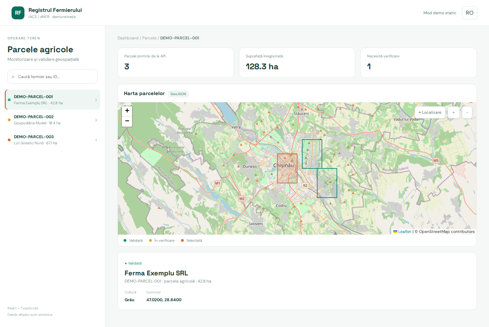
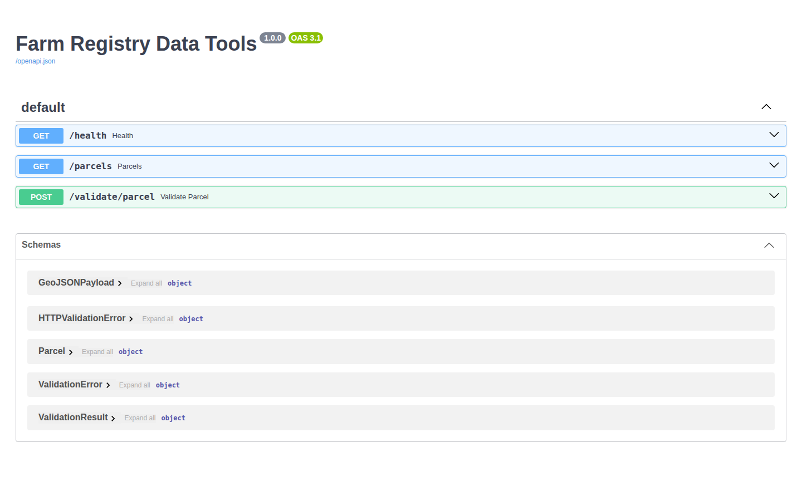

CASE STUDY · DEPUS
Farm Registry
Web + Python Tools
Registrul de parcele combina clientul React cu serviciul FastAPI: clientul executa GET /parcels, iar API-ul expune acelasi contract documentat prin REST/OpenAPI.
Problema este vizualizarea si prelucrarea coerenta a datelor geografice. Solutia separa interfata, accesul REST si utilitarele Python, pastrand responsabilitati verificabile in doua repository-uri.
ReactTypeScriptReact QueryAxios RESTLeaflet / GeoJSONFastAPIPydanticShapely / pyproj

